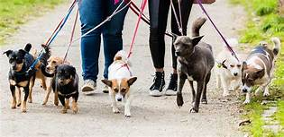

One of the first things that you should train your dog(s) are potty training and how to walk with you. With potty training, you need to think of a key word for your dog, signaling that they can go to the bathroom wherever at that time. Say it everytime they go, so that it becomes a habit. When they start to understand, whenever you say that word, they will follow nature's call. For example, if their key word is "pineapple", whenever you say pineapple, they will go.
Image from pluspets.com
As for walking, make sure that they stay withing the radius of their leash, and do not pull away from you. Try using treats to guide them if they are anxious, and present yourself to them as the leader of the pack, meaning that you should be confident and firm. This way, they will feel the obligation to follow you.
Make sure while training, and acting as a leader, that your dog is still having some fun. This way, they will have motivation to be trained again!
written by Naomi S.